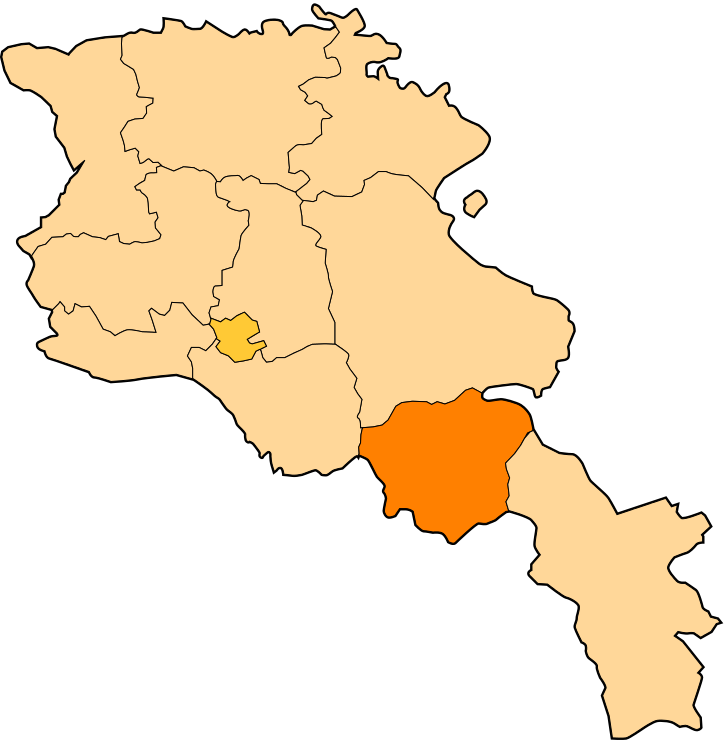

Հետ գնալ
Վայոց Ձորի մարզ
Վայոց ձորի մարզ, մարզի կարգավիճակ ունեցող վարչատարածքային միավոր Հայաստանի հարավարևելյան վերջույթում։
Զբաղեցնում է պատմական Հայաստանի Սյունյաց նահանգի նույնանուն գավառի հիմնական տարածքը։ Ներկայիս վարչատարածքային միավորը ձևավորվել է
Հայկական ԽՍՀ-ի մաս կազմած Եղեգնաձորի և Վայքի (Ազիզբեկովի) շրջանների միավորման հետևանքով՝ 1995 թվականի բարեփոխումների արդյունքում։
Վայոց Ձորի մարզի քաղաքային համայնքների թիվը 3 է՝
Վայոց Ձորի տարածաշրջաններն են՝
- Եղեգնաձոր
- Ազիզբեկովի (Վայքի)